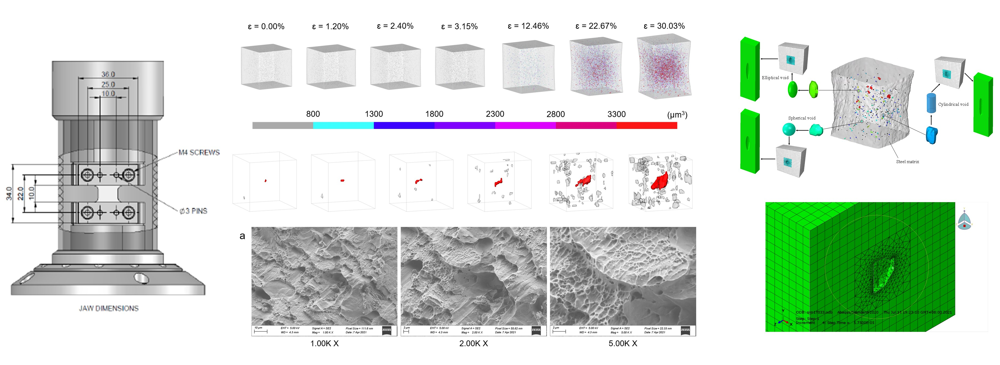
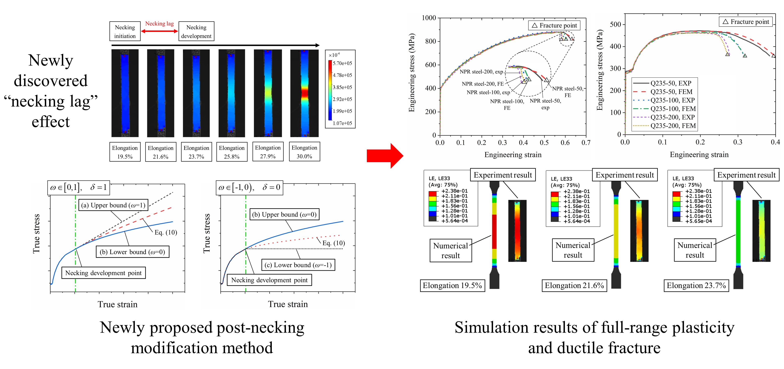
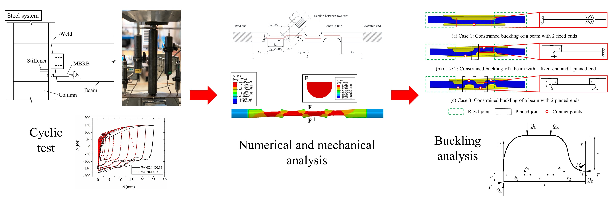
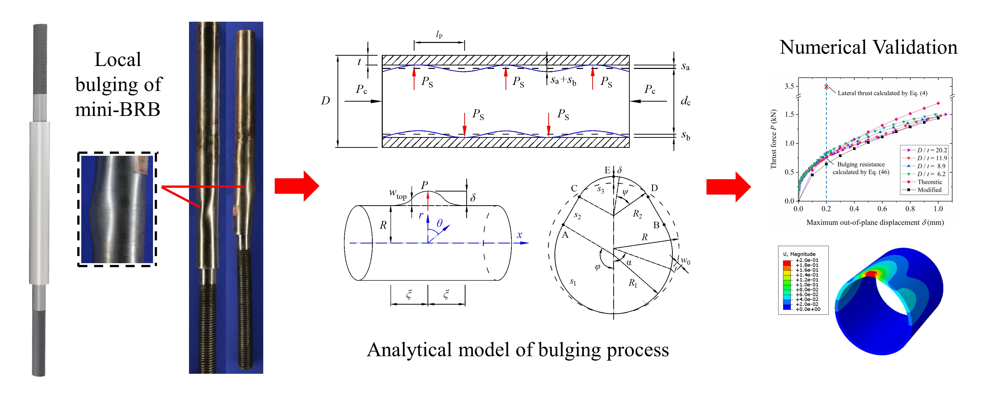
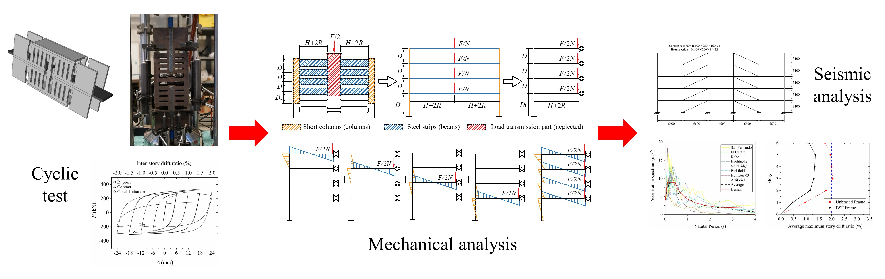
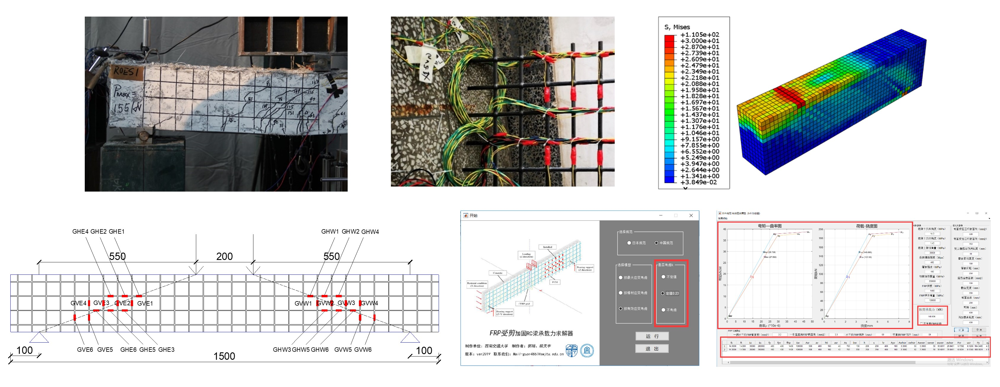
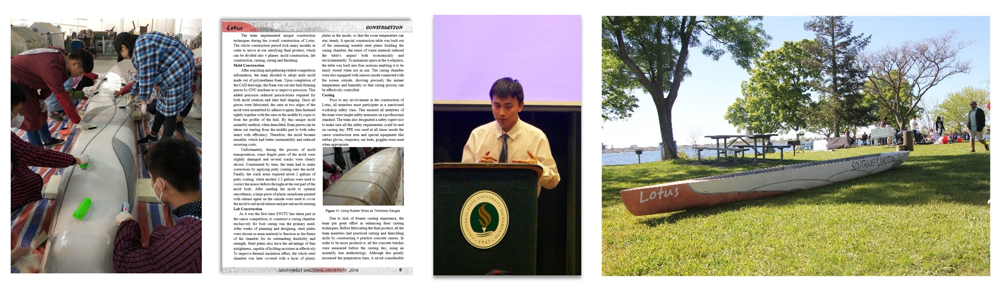

Tianyu Gu
I am a graduate student at School of Civil Enginerring, Tongji University, Shanghai. Co-advised by Prof. Xianzhong Zhao and Prof. Liang-Jiu Jia, I work on earthquake engineering, fracture and multi-scale analysis, etc. Before that, I obtained my undergraduate degree at School of Civil Engineering, Southwest Jiaotong University (SWJTU), Chengdu in 2019.
Publications
Journal Papers:
- Unified full-range plasticity till fracture of meta steel and structural steels
Tianyu Gu, Liang-Jiu Jia*, Bo Chen, Min Xia, Hongyan Guo, Man-Chao He*
Engineering Fracture Mechanics 2021 | paper - Experimental study on miniature buckling-restrained brace with corrugated core bar
Tianyu Gu, Jiong-Hui Li, Jubo Sun, Liang-Jiu Jia*, Tao Liu, Hanbin Ge*
Journal of Earthquake Engineering 2021 | paper - Analytical model for local bulging failure of mini-BRBs with circular restraint tubes
Tianyu Gu, Sen Yang, Dongzhi Guan, Liang-Jiu Jia*
Journal of Constructional Steel Research 2021 | paper - Experimental study on damage detectable brace-type shear fuses
Feifei Shao, Tianyu Gu, Liang-Jiu Jia*, Hanbin Ge*, Miki Taguchi
Engineering Structures 2020 | paper - Theoretical local bulging analysis on miniature buckling-restrained brace with corrugated core bar
Liang-Jiu Jia, Tianyu Gu, Yan Liu, Hanbin Ge*
Engineering Structures (under review) - Micro ductile fracture mechanism of a meta-steel with auxetic effect through in-situ three-dimensional investigation
Liang-Jiu Jia, Chang-Feng Zhou, Rui Zhang, Tianyu Gu, Tao Liu, Jinbao Xie, Man-Chao He*, Min Xia*, Bo Chen*
Science Advances (under review) - Experimental study on shear behavior of RC beams strengthened with FRP mesh and ECC
Rui Guo, Yu Ren, Tianyu Gu
Industrial Construction (in Chinese) 2019 | paper
Patents:
- Solver for bearing capacity of RC beam strengthened with FRP and ECC
Rui Guo, Tianyu Gu
Software copyright registered by the State Copyright Administration 2019
Projects
Mar. 2021 – Present, Shanghai

Ductile fracture of metal originates from the growth and coalescence of internal micro-voids. This study aims to investigate the mechanism of macro ductile fracture from a microscopic perspective, and it begins with the establishment of a micro-void growth model. In-situ X-ray micro-CT experiments towards metallic coupons such as aluminum and mild steel under monotonic tensile loading were conducted, and the X-ray micro-tomographic images were then processed by an algorithm for automatic void segmentation for 3D reconstruction, so that real void evolution data of metal under tension can be obtained. Moreover, void recognition in SEM photos was realized through convolutional neural network (CNN). Based on the huge amounts of void data from experiments and numerical representative volume element (RVE) analyses, recurrent neural network (RNN) will be adopted to predict the growth of void.
Nov. 2020 – Mar. 2021, Shanghai

This study aims to investigate mechanical behaviors of a novel meta steel with auxetic effect (termed as NPR steel) with high strength and ductility, compare it with conventional structural steels and establish a unified full-range plasticity model. I conducted an experiment towards different types of steel coupons with different gauge lengths using digital image correlation (DIC), and then conducted numerical analyses to simulate their ductile fracture behaviors. A curious “necking lag effect” was observed for mild steels, which can significantly affect their post-necking ductility and cause inaccuracy in numerical simulation. For this reason, a new post-necking true stress – true strain modification method with minor size effect was proposed to establish unified full-range plasticity till fracture of different types of steels, and it functioned well to capture their ductile fracture behaviors.
Jul. 2020 – Dec. 2020, Shanghai

This study proposed and investigated a type of all-steel mini-BRB with corrugate core bar (CMBRB) and it has high ductility due to its unique geometry. Cyclic experiments, theoretical analyses and numerical simulations were conducted to six different specimens. Design formulae were proposed and design procedures were given. Moreover, local buckling analysis was conducted towards CMBRBs with different configurations, and a criterion to prevent local bulging of restraint tube was proposed.
Mar. 2020 – Oct. 2020, Shanghai

This study aims to investigate the mechanism of local bulging of circular constraint tube of mini-BRB and establish a mathematical model for the complex bulging process. Theoretical analyses were conducted based on the plastic line theory and the rigid-plastic assumption, and numerical simulations were conducted for validation. The mathematical model with multiple degrees-of-freedom was simplified through a numerical algorithm, and a design criterion convenient for engineering application to prevent bulging was finally given.
Sept. 2019 – Mar. 2020, Shanghai

This study proposed and investigated a type of all-steel damage-detectable brace-type shear fuse (BSF) with uncoupled strength and stiffness. Cyclic experiments, theoretical analyses and numerical simulations were conducted to five specimens. Design formulae were proposed and design procedures were given. Finally, time-history analyses of structures with and without BSF braces were conducted under eight different earthquake waves, and it was proved that BSF can efficiently reduce the seismic response of structures.
Dec. 2018 – May. 2019, Chengdu

I participated in the design and experiment of ten RC beam specimens, developed a theoretical model for RC beam strengthened with FRP and ECC, and wrote a computing software with GUI to predict the load-displacement curve of strengthened RC beam by MATLAB.
Oct. 2016 – Mar. 2018, Chengdu (preparation); Mar. 2018 – Apr. 2018, Sacramento

This competition encourages undergraduates to construct concrete canoes by themselves and finally have a canoe race together. SWJTU participated in it for the first time in 2018. I was responsible for mechanical design and construction of the canoe ‘Lotus’ and I made the presentation in Sacramento, California. We won the 6th place in the Mid Pacific Conference.
Awards